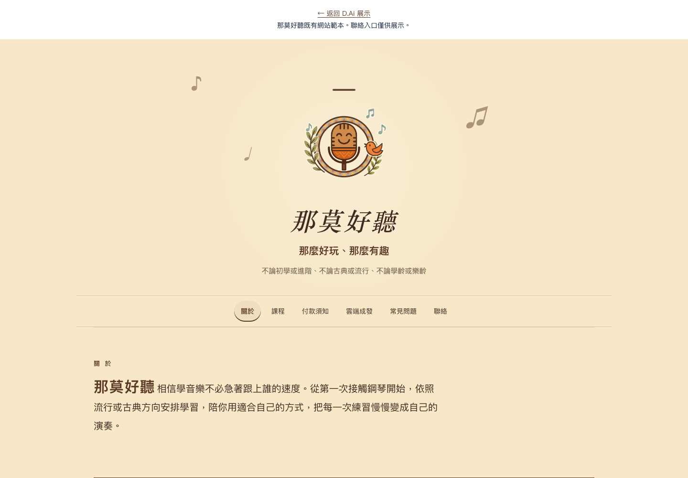
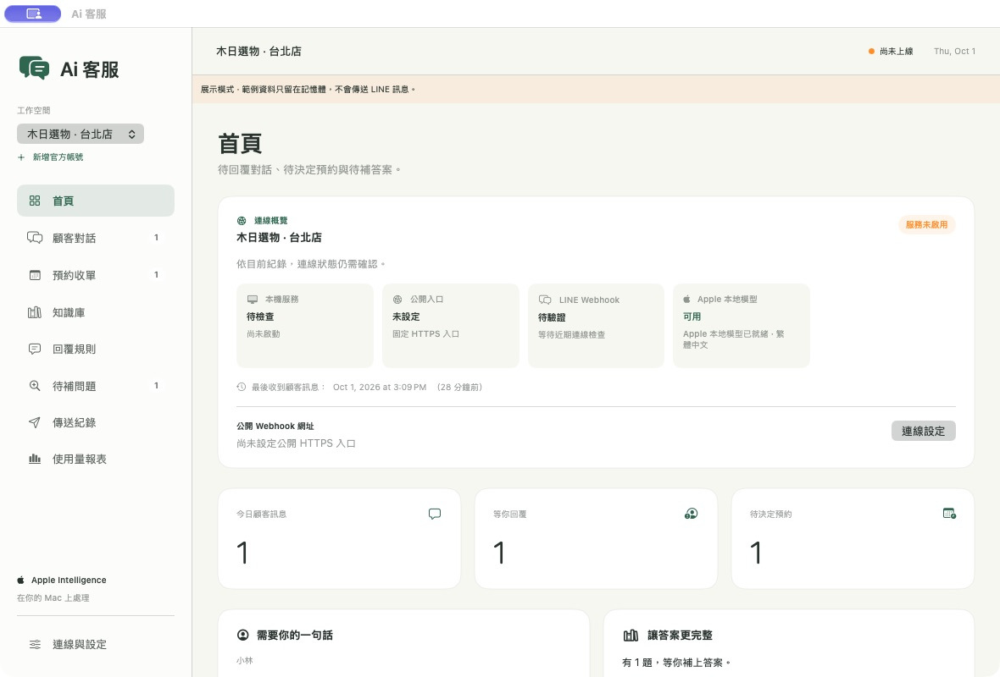
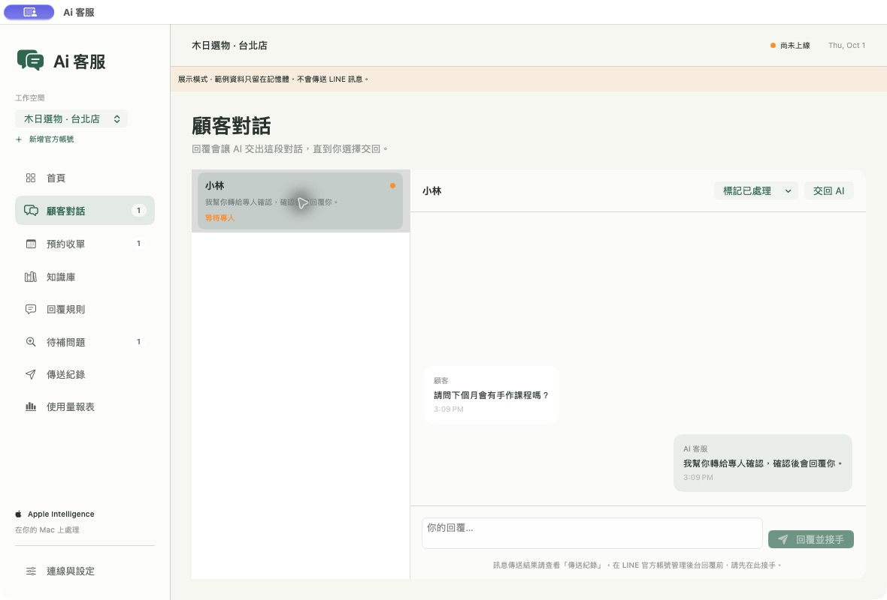
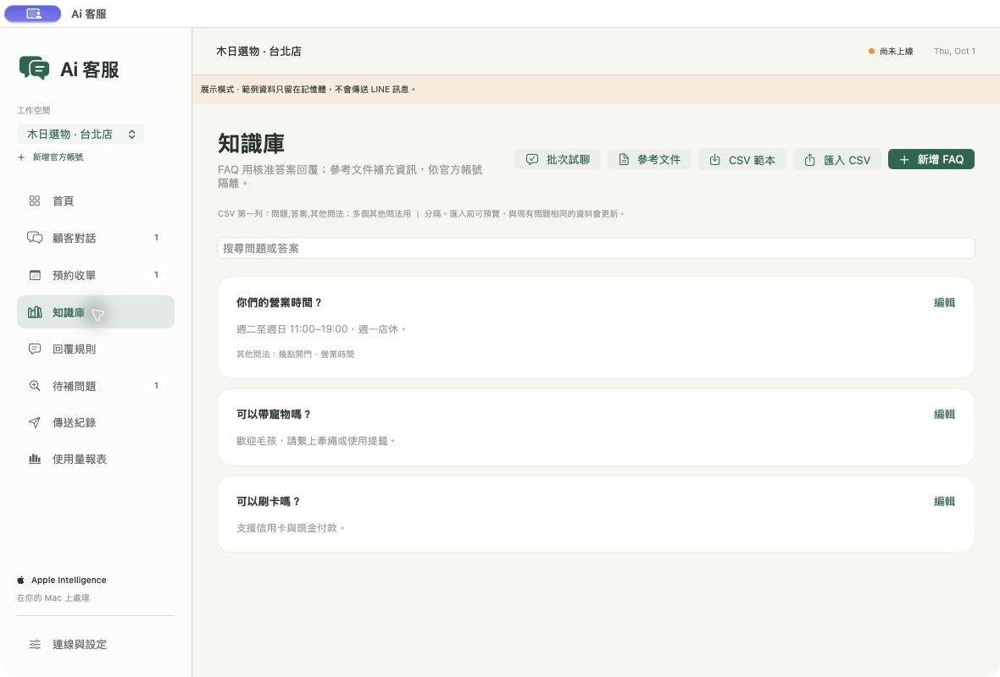
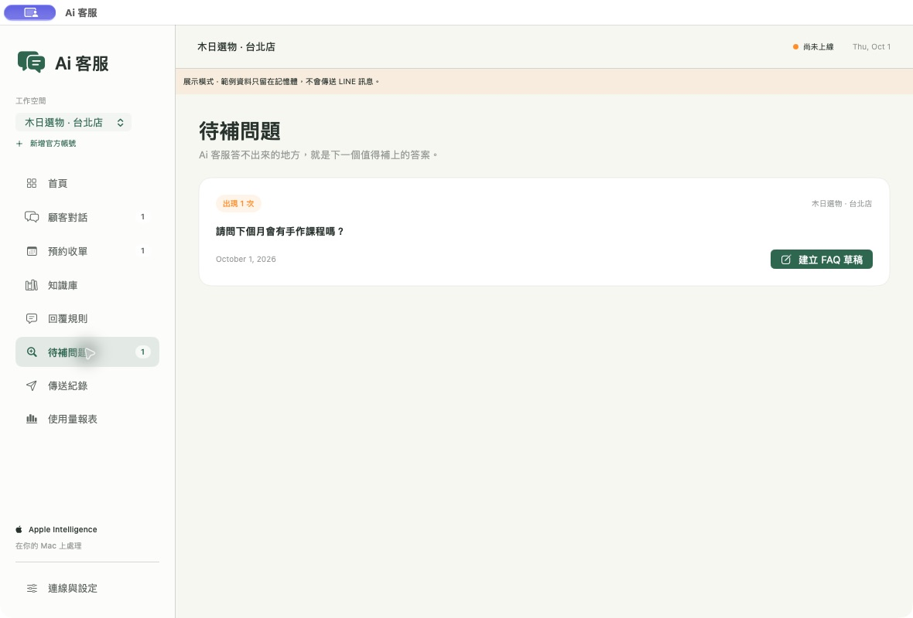
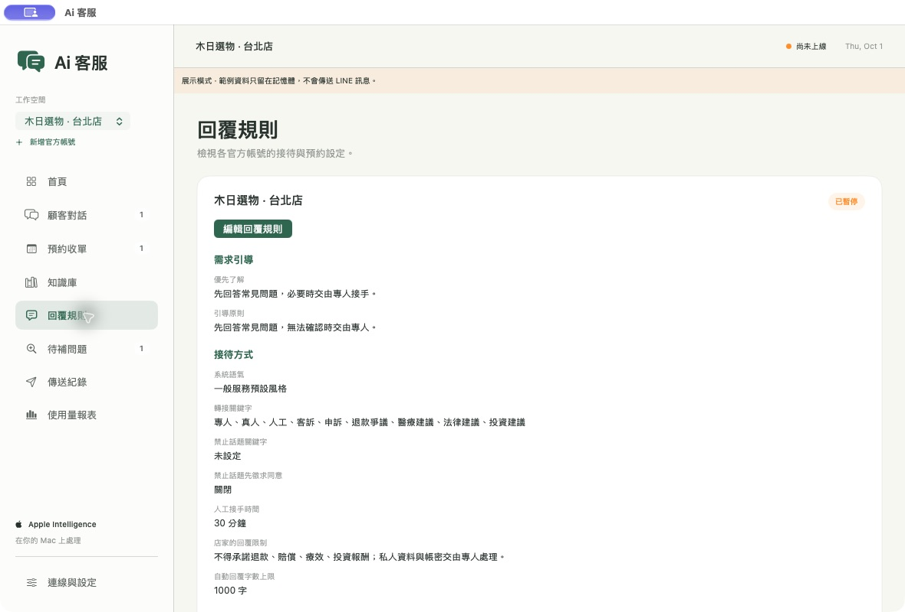

那莫好聽｜形象網站範本
以音樂品牌為範本，將品牌故事、課程內容與常見問題整理成容易閱讀的網站。

作品展示
形象網站與 AI 客服，看看實際畫面。
以音樂品牌為範本，將品牌故事、課程內容與常見問題整理成容易閱讀的網站。

AI 客服產品
把常見問答、客服對話與真人接手放在同一個工作空間。標準資訊有清楚答案，特殊需求有人接續處理，後續也能把新問題整理回知識庫。
把營業時間、服務項目與付款方式整理成 FAQ，補上顧客常用的其他問法。可逐筆編輯或匯入 CSV，更新前預覽答案並試聊。
在首頁查看待回覆對話、待決定預約與待補問題。對話清單呈現接待狀態，打開就能接續查看訊息脈絡。
在對話頁選擇「我來接手」或「回覆並接手」，依回覆規則切換處理方式。確認後可標記完成，也能選擇「交回 AI」。





經常收到相似問題、需要整理服務資訊，或希望把一般問答與特殊需求分工處理的店家與小型團隊。
列出常見問題、核准答案，以及哪些需求需要交給專人。
新增或匯入 FAQ，用不同問法確認回覆，再核准儲存。
從首頁與對話清單掌握狀態，確認需要回覆、處理或補答案的項目。
需要時由真人處理；將待補問題整理成新的 FAQ，讓下一次接待更有依據。
知識庫整理、固定規則試聊與人工接手不以模型生成為前提；正式客服服務啟用仍需通過模型與 LINE 連線檢查。
查看 Apple 官方裝置與語言需求本版 App 需要 macOS 27 或以上。本機 AI 功能需支援並啟用 Apple Intelligence；詳見上方使用需求，導入前也會確認 LINE 串接與網路環境。
可以先評估既有帳號的串接方式；完成帳號設定、連線驗證與回覆規則確認後使用。
可在知識庫編輯 FAQ 與其他問法，也能匯入 CSV。更新前預覽並試聊，日常再從待補問題持續整理答案。
標準服務資訊整理成常見問答；需要個別確認的安排、特殊需求與後續決定，可由真人接手處理。